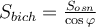

Площі поверхонь та об'єми тіл обертання
Площі поверхонь та об'єми тіл обертання


4)Формули площі поверхні і об'єму піраміди
Площею повної поверхні піраміди є сума площ усіх її граней (тобто основи і бічних граней), а площею бічної поверхні піраміди — сума площ її бічних граней:
.
Наприклад: .
Площа бічної поверхні правильної піраміди дорівнює половині добутку периметра основи на апофему:
де l – апофема.
Наприклад: .
Якщо бічні грані піраміди нахилені до основи під кутом φ, а площа основи дорівнює  , то площа бічної поверхні піраміди
, то площа бічної поверхні піраміди
.
Об’єм піраміди дорівнює третині добутку площі основи на висоту:
.
Площа повної поверхні зрізаної піраміди дорівнює сумі площ усіх її граней (тобто основ і бічних граней), а площа бічної поверхні зрізаної піраміди – сумі площ її бічних граней
 .
.
Наприклад: , де .
Площа бічної поверхні правильної зрізаної піраміди дорівнює добутку півсуми периметрів основ на апофему.
,
де Р1, Р2 – периметри основ, l – апофема.
Об’єм V зрізаної піраміди, висота якої H, а площі основ дорівнюють S1 і S2, обчислюється за формулою:
.